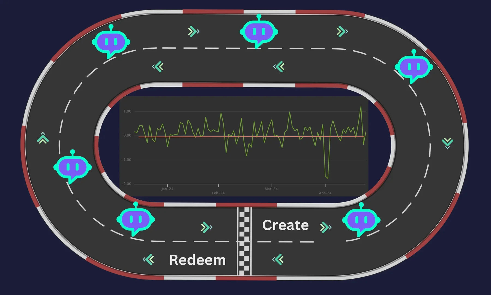
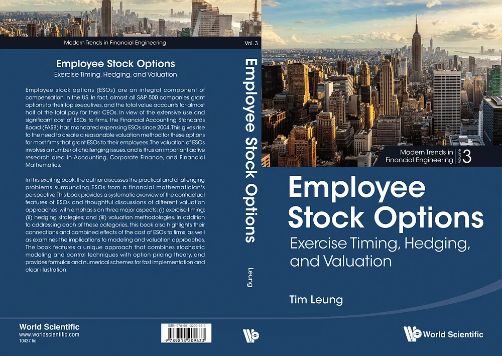

The blog.
Research summaries and the first notes on AI agents in finance — 29 posts from the people behind OpenEXA and the researchers they work with.
The Gen-AI series: from business model to AI agents.
Four posts by Ajit K Dubey, written in 2024. They set out where generative AI creates value, then work one financial use case end to end: relative value analysis, guardrails and tearsheets, and the AI copilots and autonomous agents they make possible. It's the line of thinking that became OpenEXA.
Start with the introduction-
00
 Introduction · The business model3 min
Introduction · The business model3 minUnlocking Gen-AI's True Potential: The Next Phase of Monumental Value Creation
May 17, 2024 -
01
 Part 1 · Relative value11 min
Part 1 · Relative value11 minThe Impact of Generative AI Models: Revolutionizing Relative Value Analysis in Securities Markets
Jun 1, 2024 -
02

Part 2 · Guardrails & tearsheets6 minAI Guardrails, Precise Boundary and Tearsheets can Transform Value Creation in Financial Markets
Jun 15, 2024 -
03
 Part 3 · AI agents8 min
Part 3 · AI agents8 minAI Agents in Finance: How Relative Value Analysis and Tearsheets Pave the Way for AI Copilots and Autonomous Intelligent Agents
Jun 30, 2024
AI & agents.
The first notes on AI copilots, guardrails and autonomous agents in financial markets — the thinking that became OpenEXA's agentic infrastructure.
AI Agents in Finance: How Relative Value Analysis and Tearsheets Pave the Way for AI Copilots and Autonomous Intelligent Agents
Unlocking the Future: How Relative Value Analysis and Tearsheets Pave the Way for AI Copilots and Autonomous Intelligent Agents
8 min readUnveiling the Vital Role of Credit in the Financial System. Why Banks Exist?
The commonality between banks lies in their core function of credit or lending.
5 min readAI Guardrails, Precise Boundary and Tearsheets can Transform Value Creation in Financial Markets
Unveiling the Power of Generative Models: Transforming Relative Value Analysis with Tearsheets' Unmatched Accuracy
6 min readThe Impact of Generative AI Models: Revolutionizing Relative Value Analysis in Securities Markets
The Impact of Generative Models: Revolutionizing Relative Value Analysis in Securities Markets
11 min readUnlocking Gen-AI's True Potential: The Next Phase of Monumental Value Creation
In Search of the Gen-AI Business Model. | The Next Phase of Gen-AI's Monumental Value Creation.
3 min readFinancial markets research.
Summaries of peer-reviewed research in computational finance: ETF price dynamics and drawdown risk, optimal execution, futures portfolios, sparse mean-reverting portfolios and multiscale signal processing.
More on financial markets researchMultiscale Analysis & Volatility Asymmetry of Cryptocurrency Prices
Adaptive complementary ensemble empirical mode decomposition (ACE-EMD) for non-stationary time series
3 min readLeveraged ETFs - Price Dynamics and Options Valuation
The ETF industry now consists of more than 2,000 funds with well over $4 trillion in assets.
3 min readModern Trends in Financial Engineering
Modern Trends in Financial Engineering, publishes monographs on important contemporary topics in theory and practice of Financial Engineering.
3 min readExamining the Drawdown Risk of Sector ETFs - 2022
A drawdown measures the distance (in %) of the portfolio value from its peak, reflecting its downside risk.
3 min readOptimal Execution for High Frequency Trading
In high-frequency trading, large buy (or sell) orders may cause other traders to raise (or lower) their offered price.
4 min readStochastic Storage Cost Model for Grains Futures
The world is experiencing the biggest supply shock to global grains markets in recent history. Prices of various crops have skyrocketed.
6 min readDynamic Estimation of Stochastic Gold Exposure
Gold is often viewed as a safe haven asset or a hedge against market turmoil, currency depreciation, and other economic or political events.
4 min readEncoding Market View via a Randomized Brownian Bridge
Trading decisions often depend on the trader's subjective belief of the distribution of the asset price on a given future date.
1 min readMultiscale Decomposition and Analysis of Sector ETF Price Dynamics
Asset prices are driven by factors of different timescales, ranging from long-term market regimes to short-term fluctuations.
5 min read
Dynamic Futures Portfolio in a Regime-Switching Market
Asset prices are often seen as being dependent on market conditions. Market regimes may change suddenly and persist for a period of time.
3 min readDynamic Futures Portfolio Under a Multifactor Gaussian Framework
Futures are standardized exchange-traded bilateral contracts of agreement to buy or sell an asset at a pre-determined price at a time in future.
2 min read
Multiscale Financial Signal Processing
Market observations and empirical studies have shown that asset prices are often driven by multiscale factors in the short term.
5 min read
Cardinality-Constrained Portfolios: Optimization Approach & Algorithm
Every portfolio can be partitioned into multiple asset groups defined by asset classes, sectors, styles, and other features.
4 min read
Employee Stock Options - Exercise Timing, Hedging, and Valuation
Book Title: Employee Stock Options Exercise Timing, Hedging, and Valuation
2 min read
An Optimization Algorithm for Sparse Mean-Reverting Portfolio Selection
We study an approach that combines statistical learning and optimization to construct portfolios.
5 min read
The Drawdown Risk and Portfolio Concentration of Sector ETFs
A drawdown measures the distance (in %) of the portfolio value from its peak, reflecting its downside risk.
3 min readMarket structure & economics.
Summaries of academic research on how financial markets shape real decisions — information, contracting, credit, automation and the labour share.

The Labor Market for Bankers and Regulators
Who becomes a financial regulator and who becomes a banker?
3 min readAutomation, financial frictions, and the long-run labor share
Does automation benefit or harm workers? Will complete automation drive the labor share to zero?
1 min readESG: A panacea for market power?
Equilibrium of product/labor markets when firms adopt ESG. And equilibrium in ESG policies. Focuses on the S part of ESG.
2 min readOrdering information content using the quantile function.
Lehmann's (1988) information ordering is equivalent to single-crossing of the quantile function.
1 min readBuying high and selling low: Stock repurchases and persistent asymmetric information
Analyzes a dynamic version of Myers and Majluf's classic model. Equilibria feature repurchases, even though all firms want to raise cash. Some f
3 min readContracting in the presence of judicial agency
Judges have agency conflicts too. How does this affect contracting?
1 min readThe real effects of financial markets
Lehmann's (1988) information ordering is equivalent to single-crossing of the quantile function.
1 min readPredatory mortgage lending
Predatory lending can arise even in the absence of lender fraud and borrower confusion.
2 min readThe thinking behind the swarm.
Two research notes and an eight-part series on why high-stakes work should be run by thousands of narrow agents behind one deterministic boundary.